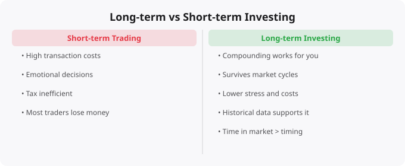

The people who build significant wealth through investing are almost never the most active traders, the most sophisticated analysts, or the ones who spend the most time watching stock prices. They are the ones who invested consistently, stayed patient through volatility, and let time work in their favor. This is not an accident. Long-term investors win for reasons that are structural, mathematical, and psychological.
Compounding — earning returns on your previous returns — is the engine that drives long-term wealth creation. Consider this example. Suppose you invest Rs 10,000 at age 25 and it grows at 12% annually, a reasonable long-term average for diversified equity investments historically. At age 35 (10 years later), you have about Rs 31,000. At age 45 (20 years later), about Rs 96,000. At age 55 (30 years later), about Rs 3 lakh. At age 65 (40 years later), about Rs 9.3 lakh. That original Rs 10,000 grew to Rs 9.3 lakh without adding another rupee. The last 10 years produced more absolute rupee value than the first 30 years combined.
The critical implication: time in the market is the most powerful variable in the equation. Starting early matters enormously. Interrupting the compounding by withdrawing money or selling in panic during market downturns is extremely costly — not because you realize a loss, but because you stop the compounding engine.
Successfully trading requires being right about direction twice — when to buy and when to sell. It also requires doing this consistently enough that the gains exceed the transaction costs, taxes, and the opportunity cost of time spent on research. And it requires doing this while competing against institutional investors who have faster information, more sophisticated models, better risk management, and more capital. Study after study of retail investor trading behavior shows that active traders underperform passive long-term investors, often dramatically. Every time you buy a stock believing it will go up, someone else is selling it. One of you is right and one is wrong. For most individuals, the honest edge over the average participant in that transaction is: not much.
One of the most documented phenomena in behavioral finance is the behavior gap — the difference between the returns that investment funds actually produce and the returns that actual investors in those funds experience. This gap exists because investors tend to buy after markets have gone up and sell after markets have gone down. Buying high and selling low is driven by very human psychological impulses. Markets dropping feels terrible. Every news headline seems to confirm that things are getting worse. The instinct is to stop the pain by selling.
But those market drops are precisely when the long-term investor's edge is greatest. When prices fall, every rupee invested buys more of the same assets. History has shown, without exception so far, that every major market decline was eventually followed by recovery and new highs for diversified, broad-market investments. The long-term investor's advantage is the ability to stay invested through the downturns.
In the context of equity investments, long-term generally means at least 5-7 years, and ideally much longer. Over short periods — weeks, months, even a year or two — stock markets are highly unpredictable and volatile. Over longer periods, the variance narrows dramatically. Looking at historical data for major indices, the probability of a diversified equity investment being in positive territory increases substantially as the time horizon extends. Over 15-20 year periods, the historical probability of a diversified equity index delivering positive real returns has been extremely high.
Invest consistently through SIPs (Systematic Investment Plans). Automating your investing removes the temptation to time the market and ensures that you buy more when markets are low. Stay diversified — do not put all your capital into a single stock, sector, or country. Keep costs low. The fees you pay to investment managers, funds, and brokers are a direct drag on your returns. Index funds and ETFs offer broad market exposure at very low cost. Over decades, the difference between a 0.1% expense ratio and a 1.5% expense ratio is enormous.
Do not check your portfolio daily. Frequent checking leads to emotional decision-making. Set your investment plan, automate it, review it quarterly or annually, and otherwise leave it alone. Understand what you own. Even if you invest in index funds, understand what index you are tracking, how it is constructed, and what the historical characteristics of that market are. Informed investors make better decisions when markets get difficult. The long-term investor's real competitive advantage is not information, analytical sophistication, or intelligence. It is temperament — the ability to stay rational when markets are irrational, to think in years when others are thinking in days.
← Back to BlogFinancial education is only valuable if it changes behavior. The concepts covered here — whether about market mechanics, investment principles, or economic systems — are most useful when they become part of your decision-making framework rather than abstract knowledge that exists separately from your actions. The most important application is self-awareness: understanding why you are tempted to make certain financial decisions, recognizing when emotion is driving a choice that analysis should drive, and building systems (automatic investments, pre-committed rules for buying and selling) that protect you from your own worst instincts under pressure. Good financial decisions compound just as good investments do.
Every topic in technology and finance rewards the learner who goes beyond surface understanding to build genuine fluency. Fluency comes from repeated exposure, application in varied contexts, and reflection on what worked and what did not. The concepts discussed here are starting points — each one opens into a deeper field of study that could occupy years of focused learning. The most effective approach is not to try to master everything at once, but to pick the areas most relevant to your current goals, go deep there, and then expand. Depth in a few areas is more valuable than shallow familiarity with many. Build on what you know, stay curious about what you do not, and keep the practice of learning as a consistent daily habit rather than an occasional burst of effort.
The questions that make learning stick: How does this connect to what I already know? Where would I actually use this? What would happen if I tried to explain this to someone who knows nothing about it? What are the edge cases and exceptions? What is still unclear? Asking these questions transforms passive reading into active learning, and active learning is what builds the kind of understanding that is still accessible years later when you need it under real conditions.